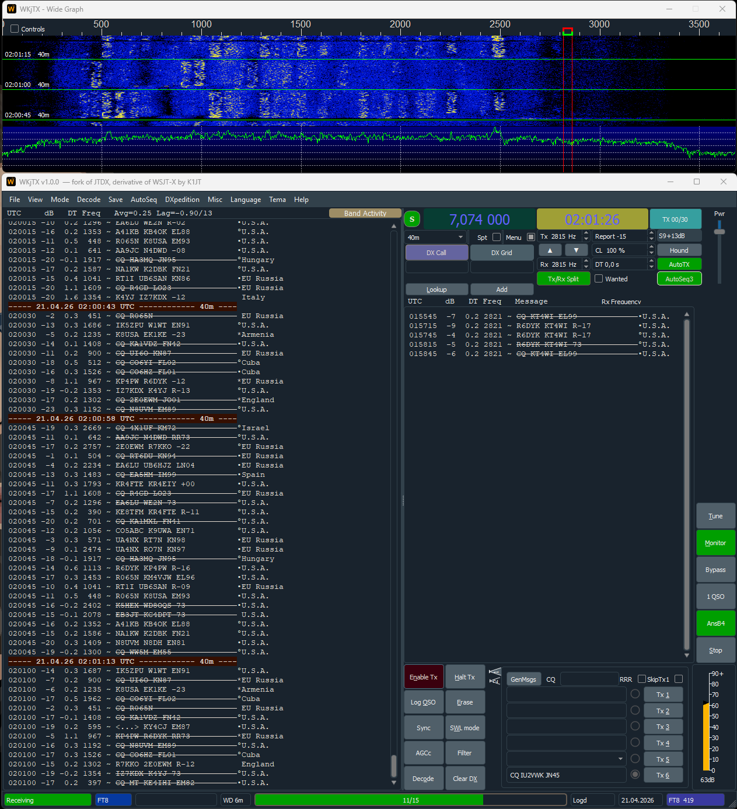
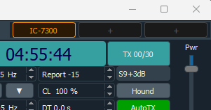
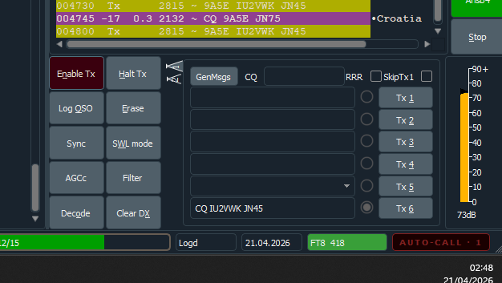
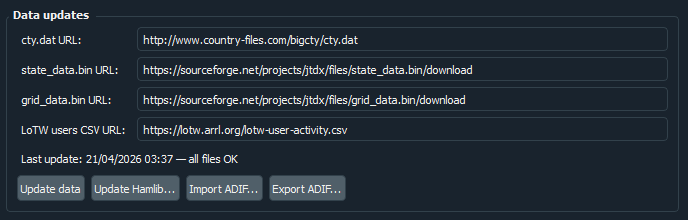

A freeware weak-signal HF digital mode client for Windows — with 3-slot radio profile quick-switch, auto-call, one-click data refresh, and built-in log import/export. Unzip anywhere and go on air in minutes. No subscription. No system changes.

WKjTX fixes the JTDX auto-sequencer and adds the tools every HF DX operator needs — all built in, no companion app required.
No longer drops replies in marginal copy. If a station answers your CQ and the decode is valid, WKjTX responds — even on a noisy band.
The sequencer stops calling CQ when nobody is coming back, instead of cycling indefinitely. You stay in control of your transmit time.
Built on JTDX 2.2 — the iterative multi-pass FT8 decoder that routinely out-decodes stock WSJT-X on crowded HF bands. +5–15% more decodes in typical conditions.
NEW in v1.1. Three preset slots in the menubar corner. Switch radios without ever opening Settings.

Run more than one rig from the same PC? Click a slot, the radio switches — CAT, audio device, PTT, the lot. No Settings dialog. No quitting and re-launching. No companion app.
%LOCALAPPDATA%/WKjTX/profiles/. They never touch your main config.Seven trigger categories. Five alert slots. Hardcoded rate limits so you never flood the band.
Open File → Auto-call and WKjTX starts replying to decoded calls automatically — based on the categories you enable. Works in the background while you do other things.

Hit Update data once on first run. Four files downloaded, verified, installed. Every URL is editable.

No more hunting down four separate files from four websites. One button fetches everything — and shows you when it last ran and whether all files are current.
libhamlib-5.dllBuilt in. No companion app. No subscription.
Import a .adi file from WSJT-X, JTDX, Log4OM or any
other logger. Duplicates skipped on CALL + QSO_DATE + BAND + MODE.
Save a snapshot of the internal log to any .adi file of
your choice — without leaving the app. One click in Settings → General.
Separate point-size spinboxes next to Application Font and Decoded Text Font. Adjust to taste with one click.
Ships English only. Drop your compiled wkjtx_<locale>.qm
in bin/translations/ to run in any language. Legacy
jtdx_*.qm files work as-is.
Opens the JTDX Hamlib SourceForge directory in your browser. Download,
drop libhamlib-5.dll into bin\, done.
Old DLL auto-renamed as backup.
Unzip anywhere — Desktop, USB stick, C:\WKjTX. Everything
bundled: DLLs, decoder, Hamlib. Uninstall by deleting the folder.
Unzip anywhere — Desktop, C:\WKjTX, USB stick.
Everything is bundled: DLLs, decoder, Hamlib.
No system changes. Uninstall by deleting the folder.